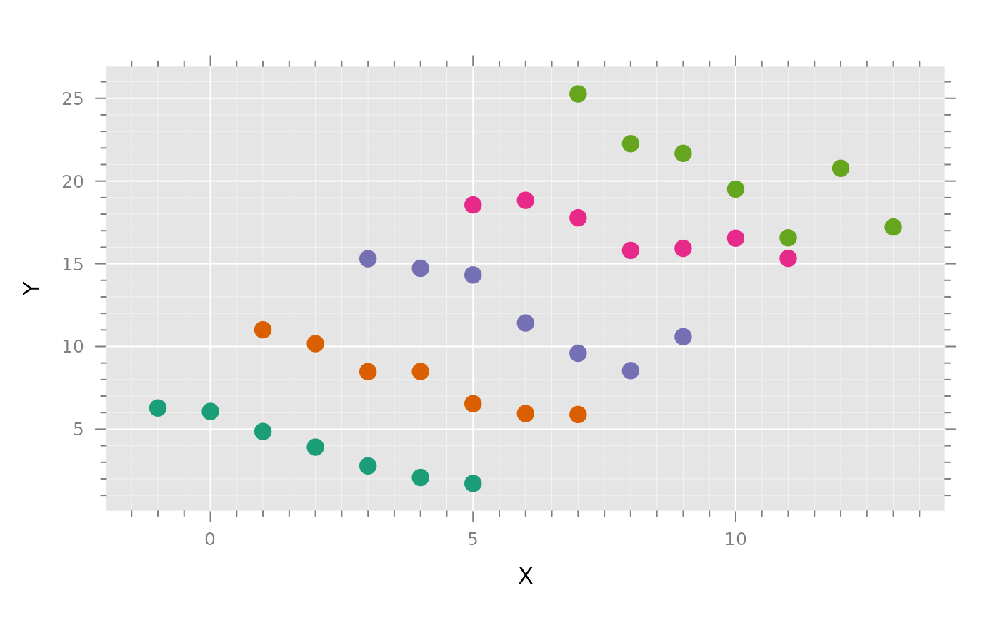

These functions call getVarCov in the
nlme package. They are intended to have names and functions
that are easy to remember.
Usage
getG(fit, ...)
# Default S3 method
getG(fit, ...)
# S3 method for class 'lme'
getG(fit, ...)
# S3 method for class 'gls'
getG(fit, ...)
getR(fit, ...)
# Default S3 method
getR(fit, ...)
# S3 method for class 'lme'
getR(fit, ...)
# S3 method for class 'gls'
getR(fit, ...)
getV(fit, ...)
# Default S3 method
getV(fit, ...)
# S3 method for class 'lme'
getV(fit, ...)
# S3 method for class 'gls'
getV(fit, ...)Value
For lme objects, getG returns
the between-cluster variance of random effects, getV,
and getR returns a list with the within-cluster marginal
variance and the within-cluster conditional variance respectively
for the the clusters listed in individuals. If
individuals is missing, the variance of the first
cluster is returned. ISSUE: For
gls objects all functions return the same thing but
uninformatively if correlation is clustered and if weights
produce differenct variances in the corresponding positions in
different clusters.
Functions
getR(default): default methodgetR(lme): lme methodgetR(gls): gls methodgetV(default): gls methodgetV(lme): lme methodgetV(gls): gls method
Examples
library(spida2)
library(nlme)
library(gnew)
#> Registered S3 methods overwritten by 'gnew':
#> method from
#> coef.pdInd spida2
#> solve.pdInd spida2
#>
#> Attaching package: ‘gnew’
#> The following objects are masked from ‘package:spida2’:
#>
#> assn, dropone, f2L, f2R, ga, getG, getR, getV, pdConstruct.pdInd,
#> pdFactor.pdInd, pdInd, pdMatrix.pdInd, rnd, tablemissing
data <- expand.grid( Xdev = c(-3,-2,-1,0,1,2,3), id = 1:5 )
set.seed(12345)
data <- within(data, {
Xmean <- 2*id
X <- Xdev + Xmean
Y <- (-1 + .1*rnorm(max(id)))[id] * Xdev +
2 * Xmean + .3 * id * rnorm(length(id))
})
library(lattice)
gd()
xyplot(Y ~ X, data, groups = id)

fit0 <- lme(Y ~ X, data,
random = ~ 1+ X |id)
fit <- lme(Y ~ X, data,
random = ~ 1 + X | id,
weights = varConstPower(form = ~ fitted(.)),
correlation = corAR1(form = ~ 1 | id),
control = list(returnObject = TRUE))
fitgls <- gls(Y ~ X, data, weights = varConstPower(form = ~ fitted(.)),
correlation = corAR1(form = ~ 1|id),
control = list(returnObject = TRUE, maxIter= 1000,
verbose = TRUE, msMaxIter = 1000,
msVerbose=TRUE))
#> 0: 116.83534: 0.00000 -2.30259 0.00000
#> 1: 81.214353: 3.99035 -2.30259 0.277662
#> 2: 80.501192: 4.41352 -2.30776 0.717938
#> 3: 79.665912: 4.96784 -2.29625 0.461931
#> 4: 79.657608: 5.05062 -2.27962 0.453172
#> 5: 79.657033: 5.06634 -2.26114 0.457552
#> 6: 79.656688: 5.07161 -2.23707 0.458529
#> 7: 79.652020: 5.11706 -1.87342 0.470012
#> 8: 79.620094: 5.25905 -0.455082 0.513531
#> 9: 79.601460: 5.30590 0.112711 0.542041
#> 10: 79.533823: 5.32049 0.676886 0.625058
#> 11: 79.356929: 5.32379 1.79851 0.833719
#> 12: 79.328941: 5.29985 1.79783 0.892423
#> 13: 79.032087: 5.21667 4.60478 1.51059
#> 14: 78.784281: 5.46456 7.31282 2.44499
#> 15: 78.763840: 5.43013 6.82558 2.46310
#> 16: 78.682227: 5.35220 6.96924 2.41855
#> 17: 78.674538: 5.29549 7.00505 2.42863
#> 18: 78.671740: 5.24192 7.10474 2.46353
#> 19: 78.671714: 5.24462 7.12728 2.47116
#> 20: 78.671712: 5.24518 7.13817 2.47467
#> 21: 78.671712: 5.24516 7.13847 2.47475
#> 0: 85.728924: 5.24516 7.13847 2.47475
#> 1: 81.598431: 5.17061 7.44183 1.52480
#> 2: 81.542241: 4.86171 7.45154 1.47575
#> 3: 81.502368: 4.93412 7.46492 1.41291
#> 4: 81.429650: 5.01017 7.51045 1.17949
#> 5: 81.400514: 5.00208 7.54342 0.992265
#> 6: 81.384952: 4.98312 7.57393 0.805414
#> 7: 81.377173: 4.97386 7.60289 0.617586
#> 8: 81.373305: 4.97361 7.63068 0.429352
#> 9: 81.371493: 4.97589 7.65650 0.248429
#> 10: 81.370704: 4.97705 7.67953 0.0823984
#> 11: 81.370374: 4.97706 7.69964 -0.0660411
#> 12: 81.370249: 4.97680 7.71617 -0.190903
#> 13: 81.370210: 4.97668 7.72837 -0.285590
#> 14: 81.370200: 4.97668 7.73575 -0.345280
#> 15: 81.370199: 4.97669 7.73883 -0.372498
#> 16: 81.370199: 4.97670 7.73944 -0.380589
#> 17: 81.370199: 4.97671 7.73942 -0.386683
#> 18: 81.370198: 4.97672 7.73799 -0.398648
#> 19: 81.370197: 4.97673 7.73243 -0.417163
#> 20: 81.370193: 4.97675 7.71422 -0.449420
#> 21: 81.370184: 4.97678 7.66189 -0.505474
#> 22: 81.370161: 4.97683 7.51328 -0.611698
#> 23: 81.370096: 4.97692 7.07622 -0.841198
#> 24: 81.369881: 4.97713 5.68500 -1.43925
#> 25: 81.368786: 4.97790 0.0560980 -3.67669
#> 26: 81.364329: 4.97775 -22.4953 -12.5360
#> 27: 81.362516: 4.97738 -14.8487 -9.47321
#> 28: 81.345667: 4.97678 -15.7906 -9.38896
#> 29: 81.305564: 4.99519 -15.9352 -9.03989
#> 30: 80.983294: 4.93836 -16.3088 -8.38444
#> 31: 80.080172: 4.94752 -16.6140 -7.80620
#> 32: 79.750752: 4.97063 -16.7016 -7.61250
#> 33: 79.615807: 5.04800 -16.7719 -7.42598
#> 34: 79.592754: 5.22780 -16.7055 -7.52080
#> 35: 79.540785: 5.32351 -16.6989 -7.32970
#> 36: 79.522864: 5.47715 -16.5503 -7.33660
#> 37: 79.503669: 5.34499 -16.3961 -7.26960
#> 38: 79.501916: 5.34890 -16.3965 -7.24859
#> 39: 79.500730: 5.36028 -16.3787 -7.25156
#> 40: 79.498278: 5.36621 -16.3504 -7.22002
#> 41: 79.265544: 5.95598 -9.09001 -3.93896
#> 42: 78.974159: 5.59790 -7.43039 -2.91192
#> 43: 78.889048: 5.37452 -5.55364 -2.30754
#> 44: 78.806948: 5.29197 -5.06794 -1.78998
#> 45: 78.802440: 5.22603 -5.31117 -1.85641
#> 46: 78.801163: 5.22473 -5.20069 -1.82248
#> 47: 78.801048: 5.23764 -5.20115 -1.82272
#> 48: 78.801026: 5.23748 -5.22219 -1.83996
#> 49: 78.801023: 5.23728 -5.22885 -1.84291
#> 50: 78.801023: 5.23779 -5.22975 -1.84415
#> 51: 78.801023: 5.23767 -5.22928 -1.84375
#> 52: 78.801023: 5.23767 -5.22930 -1.84376
#> 0: 78.801032: 5.23767 -5.22930 -1.84376
#> 1: 78.800649: 5.23075 -5.25325 -1.81824
#> 2: 78.800574: 5.23680 -5.25014 -1.82551
#> 3: 78.800562: 5.23507 -5.25121 -1.82979
#> 4: 78.800550: 5.23487 -5.25449 -1.83319
#> 5: 78.800469: 5.23526 -5.29280 -1.86580
#> 6: 78.800450: 5.23649 -5.30837 -1.87517
#> 7: 78.800446: 5.23767 -5.31481 -1.87796
#> 8: 78.800446: 5.23777 -5.31469 -1.87779
#> 9: 78.800446: 5.23777 -5.31463 -1.87774
#> 0: 78.800456: 5.23777 -5.31463 -1.87774
#> 1: 78.800456: 5.23786 -5.31437 -1.87800
#> 2: 78.800456: 5.23779 -5.31441 -1.87790
#> 3: 78.800456: 5.23781 -5.31439 -1.87786
#> 0: 78.800454: 5.23781 -5.31439 -1.87786
#> 1: 78.800454: 5.23778 -5.31445 -1.87774
#> 2: 78.800454: 5.23780 -5.31441 -1.87775
#> 0: 78.800454: 5.23780 -5.31441 -1.87775
#> 1: 78.800454: 5.23780 -5.31435 -1.87778
#> 0: 78.800455: 5.23780 -5.31435 -1.87778
#> 1: 78.800455: 5.23780 -5.31433 -1.87775
#> 0: 78.800454: 5.23780 -5.31433 -1.87775
#> 1: 78.800454: 5.23779 -5.31432 -1.87773
#> 0: 78.800454: 5.23779 -5.31432 -1.87773
#> 1: 78.800454: 5.23780 -5.31430 -1.87772
#> 0: 78.800454: 5.23780 -5.31430 -1.87772
#> 1: 78.800454: 5.23780 -5.31427 -1.87771
#> 0: 78.800454: 5.23780 -5.31427 -1.87771
#> 1: 78.800454: 5.23779 -5.31425 -1.87768
#> 0: 78.800454: 5.23779 -5.31425 -1.87768
#> 1: 78.800454: 5.23779 -5.31423 -1.87767
#> 0: 78.800454: 5.23779 -5.31423 -1.87767
#> 1: 78.800454: 5.23779 -5.31421 -1.87766
#> 0: 78.800455: 5.23779 -5.31421 -1.87766
#> 1: 78.800455: 5.23779 -5.31419 -1.87765
#> 0: 78.800454: 5.23779 -5.31419 -1.87765
#> 1: 78.800454: 5.23779 -5.31417 -1.87764
#> 2: 78.800454: 5.23779 -5.31411 -1.87758
#> 0: 78.800455: 5.23779 -5.31411 -1.87758
#> 1: 78.800455: 5.23779 -5.31408 -1.87758
#> 0: 78.800455: 5.23779 -5.31408 -1.87758
#> 1: 78.800455: 5.23779 -5.31407 -1.87757
#> 0: 78.800455: 5.23779 -5.31407 -1.87757
#> 1: 78.800455: 5.23779 -5.31405 -1.87755
#> 0: 78.800455: 5.23779 -5.31405 -1.87755
#> 1: 78.800455: 5.23779 -5.31404 -1.87755
#> 0: 78.800455: 5.23779 -5.31404 -1.87755
#> 1: 78.800455: 5.23779 -5.31402 -1.87754
#> 0: 78.800455: 5.23779 -5.31402 -1.87754
#> 1: 78.800455: 5.23779 -5.31401 -1.87753
#> 0: 78.800455: 5.23779 -5.31401 -1.87753
#> 1: 78.800455: 5.23779 -5.31399 -1.87752
#> 0: 78.800455: 5.23779 -5.31399 -1.87752
#> 1: 78.800455: 5.23779 -5.31398 -1.87751
#> 0: 78.800455: 5.23779 -5.31398 -1.87751
#> 1: 78.800455: 5.23779 -5.31397 -1.87750
#> 0: 78.800455: 5.23779 -5.31397 -1.87750
#> 1: 78.800455: 5.23778 -5.31396 -1.87749
#> 2: 78.800455: 5.23779 -5.31391 -1.87745
#> 0: 78.800455: 5.23779 -5.31391 -1.87745
#> 1: 78.800455: 5.23778 -5.31390 -1.87745
#> 0: 78.800455: 5.23778 -5.31390 -1.87745
#> 1: 78.800455: 5.23779 -5.31388 -1.87745
#> 0: 78.800455: 5.23779 -5.31388 -1.87745
#> 1: 78.800455: 5.23778 -5.31388 -1.87744
#> 0: 78.800455: 5.23778 -5.31388 -1.87744
#> 1: 78.800455: 5.23778 -5.31387 -1.87743
#> 0: 78.800455: 5.23778 -5.31387 -1.87743
#> 1: 78.800455: 5.23778 -5.31385 -1.87743
#> 0: 78.800455: 5.23778 -5.31385 -1.87743
#> 1: 78.800455: 5.23778 -5.31384 -1.87742
#> 0: 78.800455: 5.23778 -5.31384 -1.87742
#> 1: 78.800455: 5.23778 -5.31384 -1.87741
#> 0: 78.800455: 5.23778 -5.31384 -1.87741
#> 1: 78.800455: 5.23778 -5.31383 -1.87741
#> 0: 78.800455: 5.23778 -5.31383 -1.87741
#> 1: 78.800455: 5.23778 -5.31382 -1.87740
#> 0: 78.800455: 5.23778 -5.31382 -1.87740
#> 1: 78.800455: 5.23778 -5.31381 -1.87739
#> 0: 78.800455: 5.23778 -5.31381 -1.87739
#> 1: 78.800455: 5.23778 -5.31380 -1.87739
#> 0: 78.800455: 5.23778 -5.31380 -1.87739
#> 1: 78.800455: 5.23778 -5.31379 -1.87738
#> 0: 78.800455: 5.23778 -5.31379 -1.87738
#> 1: 78.800455: 5.23778 -5.31378 -1.87738
#> 0: 78.800455: 5.23778 -5.31378 -1.87738
#> 1: 78.800455: 5.23778 -5.31377 -1.87737
#> 2: 78.800455: 5.23778 -5.31375 -1.87735
#> 0: 78.800455: 5.23778 -5.31375 -1.87735
#> 1: 78.800455: 5.23778 -5.31374 -1.87735
#> 0: 78.800455: 5.23778 -5.31374 -1.87735
#> 1: 78.800455: 5.23778 -5.31373 -1.87735
#> 0: 78.800455: 5.23778 -5.31373 -1.87735
#> 1: 78.800455: 5.23778 -5.31373 -1.87734
#> 0: 78.800455: 5.23778 -5.31373 -1.87734
#> 1: 78.800455: 5.23778 -5.31372 -1.87734
#> 0: 78.800455: 5.23778 -5.31372 -1.87734
#> 1: 78.800455: 5.23778 -5.31371 -1.87734
#> 0: 78.800455: 5.23778 -5.31371 -1.87734
#> 1: 78.800455: 5.23778 -5.31371 -1.87733
#> 2: 78.800455: 5.23778 -5.31369 -1.87731
#> 0: 78.800455: 5.23778 -5.31369 -1.87731
#> 1: 78.800455: 5.23778 -5.31368 -1.87731
#> 0: 78.800455: 5.23778 -5.31368 -1.87731
#> 1: 78.800455: 5.23778 -5.31368 -1.87731
#> 0: 78.800455: 5.23778 -5.31368 -1.87731
#> 1: 78.800455: 5.23778 -5.31367 -1.87731
#> 0: 78.800455: 5.23778 -5.31367 -1.87731
#> 1: 78.800455: 5.23778 -5.31367 -1.87730
#> 0: 78.800455: 5.23778 -5.31367 -1.87730
#> 1: 78.800455: 5.23778 -5.31366 -1.87730
#> 0: 78.800455: 5.23778 -5.31366 -1.87730
#> 1: 78.800455: 5.23778 -5.31366 -1.87730
#> 2: 78.800455: 5.23778 -5.31365 -1.87729
#> 0: 78.800455: 5.23778 -5.31365 -1.87729
#> 1: 78.800455: 5.23777 -5.31364 -1.87728
#> 0: 78.800455: 5.23777 -5.31364 -1.87728
#> 1: 78.800455: 5.23778 -5.31363 -1.87728
#> 0: 78.800455: 5.23778 -5.31363 -1.87728
#> 1: 78.800455: 5.23777 -5.31363 -1.87728
#> 0: 78.800455: 5.23777 -5.31363 -1.87728
#> 1: 78.800455: 5.23778 -5.31363 -1.87727
#> 0: 78.800455: 5.23778 -5.31363 -1.87727
#> 1: 78.800455: 5.23777 -5.31362 -1.87727
summary(fit)
#> Linear mixed-effects model fit by REML
#> Data: data
#> AIC BIC logLik
#> 139.7889 153.2575 -60.89445
#>
#> Random effects:
#> Formula: ~1 + X | id
#> Structure: General positive-definite, Log-Cholesky parametrization
#> StdDev Corr
#> (Intercept) 9.57603367 (Intr)
#> X 0.04560113 -0.999
#> Residual 0.07501888
#>
#> Correlation Structure: AR(1)
#> Formula: ~1 | id
#> Parameter estimate(s):
#> Phi
#> 0.2787457
#> Variance function:
#> Structure: Constant plus power of variance covariate
#> Formula: ~fitted(.)
#> Parameter estimates:
#> const power
#> 1.313487 1.035866
#> Fixed effects: Y ~ X
#> Value Std.Error DF t-value p-value
#> (Intercept) 17.47795 4.315732 29 4.049823 3e-04
#> X -0.84340 0.071429 29 -11.807513 0e+00
#> Correlation:
#> (Intr)
#> X -0.387
#>
#> Standardized Within-Group Residuals:
#> Min Q1 Med Q3 Max
#> -1.95763172 -0.62690179 0.01039131 0.58208163 1.35218794
#>
#> Number of Observations: 35
#> Number of Groups: 5
getVarCov(fit)
#> Random effects variance covariance matrix
#> (Intercept) X
#> (Intercept) 91.70000 -0.4361800
#> X -0.43618 0.0020795
#> Standard Deviations: 9.576 0.045601
getVarCov(fit, individuals = '2')
#> Random effects variance covariance matrix
#> (Intercept) X
#> (Intercept) 91.70000 -0.4361800
#> X -0.43618 0.0020795
#> Standard Deviations: 9.576 0.045601
getVarCov(fit, individuals = '2', type = 'conditional') %>%
.[[1]] %>%
diag
#> 1 2 3 4 5 6 7
#> 0.9152915 0.7884883 0.6714745 0.5641925 0.4665799 0.3785689 0.3000846
getVarCov(fit, type = 'conditional')%>%
.[[1]] %>%
diag
#> 1 2 3 4 5 6 7
#> 0.36477910 0.29033566 0.22469475 0.16777078 0.11946607 0.07966684 0.04823747
getG(fit)
#> Random effects variance covariance matrix
#> (Intercept) X
#> (Intercept) 91.70000 -0.4361800
#> X -0.43618 0.0020795
#> Standard Deviations: 9.576 0.045601
getR(fit)[[1]]
#> 1 2 3 4 5 6
#> 1 3.647791e-01 0.0907138098 0.0222447699 0.005357940 0.001260289 0.0002868765
#> 2 9.071381e-02 0.2903356604 0.0711958849 0.017148449 0.004033641 0.0009181676
#> 3 2.224477e-02 0.0711958849 0.2246947476 0.054120633 0.012730200 0.0028977437
#> 4 5.357940e-03 0.0171484488 0.0541206332 0.167770784 0.039462873 0.0089828354
#> 5 1.260289e-03 0.0040336406 0.0127302002 0.039462873 0.119466070 0.0271937639
#> 6 2.868765e-04 0.0009181676 0.0028977437 0.008982835 0.027193764 0.0796668389
#> 7 6.222382e-05 0.0001991515 0.0006285238 0.001948387 0.005898357 0.0172798240
#> 7
#> 1 6.222382e-05
#> 2 1.991515e-04
#> 3 6.285238e-04
#> 4 1.948387e-03
#> 5 5.898357e-03
#> 6 1.727982e-02
#> 7 4.823747e-02
getV(fit)[[1]]
#> 1 2 3 4 5 6 7
#> 1 92.93965 92.22732 91.72059 91.26544 90.82307 90.38384 89.94535
#> 2 92.22732 91.99076 91.33543 90.84520 90.39590 89.95660 89.51970
#> 3 91.72059 91.33543 91.05483 90.45015 89.97465 89.53071 89.09434
#> 4 91.26544 90.84520 90.45015 90.13177 89.57144 89.10893 88.66987
#> 5 90.82307 90.39590 89.97465 89.57144 89.22149 88.69928 88.24803
#> 6 90.38384 89.95660 89.53071 89.10893 88.69928 88.32388 87.83363
#> 7 89.94535 89.51970 89.09434 88.66987 88.24803 87.83363 87.43880
(Z <- cbind(1, 2+seq(-3,3)))
#> [,1] [,2]
#> [1,] 1 -1
#> [2,] 1 0
#> [3,] 1 1
#> [4,] 1 2
#> [5,] 1 3
#> [6,] 1 4
#> [7,] 1 5
Z
#> [,1] [,2]
#> [1,] 1 -1
#> [2,] 1 0
#> [3,] 1 1
#> [4,] 1 2
#> [5,] 1 3
#> [6,] 1 4
#> [7,] 1 5
(getG(fit))
#> Random effects variance covariance matrix
#> (Intercept) X
#> (Intercept) 91.70000 -0.4361800
#> X -0.43618 0.0020795
#> Standard Deviations: 9.576 0.045601
Z %*% getG(fit) %*% t(Z)
#> [,1] [,2] [,3] [,4] [,5] [,6] [,7]
#> [1,] 92.57487 92.13661 91.69834 91.26008 90.82181 90.38355 89.94528
#> [2,] 92.13661 91.70042 91.26424 90.82805 90.39187 89.95568 89.51950
#> [3,] 91.69834 91.26424 90.83013 90.39603 89.96192 89.52782 89.09371
#> [4,] 91.26008 90.82805 90.39603 89.96400 89.53197 89.09995 88.66792
#> [5,] 90.82181 90.39187 89.96192 89.53197 89.10203 88.67208 88.24214
#> [6,] 90.38355 89.95568 89.52782 89.09995 88.67208 88.24422 87.81635
#> [7,] 89.94528 89.51950 89.09371 88.66792 88.24214 87.81635 87.39056
getV(fit)[[1]]
#> 1 2 3 4 5 6 7
#> 1 92.93965 92.22732 91.72059 91.26544 90.82307 90.38384 89.94535
#> 2 92.22732 91.99076 91.33543 90.84520 90.39590 89.95660 89.51970
#> 3 91.72059 91.33543 91.05483 90.45015 89.97465 89.53071 89.09434
#> 4 91.26544 90.84520 90.45015 90.13177 89.57144 89.10893 88.66987
#> 5 90.82307 90.39590 89.97465 89.57144 89.22149 88.69928 88.24803
#> 6 90.38384 89.95660 89.53071 89.10893 88.69928 88.32388 87.83363
#> 7 89.94535 89.51970 89.09434 88.66987 88.24803 87.83363 87.43880
getR(fit)[[1]]
#> 1 2 3 4 5 6
#> 1 3.647791e-01 0.0907138098 0.0222447699 0.005357940 0.001260289 0.0002868765
#> 2 9.071381e-02 0.2903356604 0.0711958849 0.017148449 0.004033641 0.0009181676
#> 3 2.224477e-02 0.0711958849 0.2246947476 0.054120633 0.012730200 0.0028977437
#> 4 5.357940e-03 0.0171484488 0.0541206332 0.167770784 0.039462873 0.0089828354
#> 5 1.260289e-03 0.0040336406 0.0127302002 0.039462873 0.119466070 0.0271937639
#> 6 2.868765e-04 0.0009181676 0.0028977437 0.008982835 0.027193764 0.0796668389
#> 7 6.222382e-05 0.0001991515 0.0006285238 0.001948387 0.005898357 0.0172798240
#> 7
#> 1 6.222382e-05
#> 2 1.991515e-04
#> 3 6.285238e-04
#> 4 1.948387e-03
#> 5 5.898357e-03
#> 6 1.727982e-02
#> 7 4.823747e-02
sigma(fit)
#> [1] 0.07501888
getVarCov(fit, type = 'random.effects')
#> Random effects variance covariance matrix
#> (Intercept) X
#> (Intercept) 91.70000 -0.4361800
#> X -0.43618 0.0020795
#> Standard Deviations: 9.576 0.045601
getVarCov(fit)
#> Random effects variance covariance matrix
#> (Intercept) X
#> (Intercept) 91.70000 -0.4361800
#> X -0.43618 0.0020795
#> Standard Deviations: 9.576 0.045601
Z %*% getG(fit) %*% t(Z)
#> [,1] [,2] [,3] [,4] [,5] [,6] [,7]
#> [1,] 92.57487 92.13661 91.69834 91.26008 90.82181 90.38355 89.94528
#> [2,] 92.13661 91.70042 91.26424 90.82805 90.39187 89.95568 89.51950
#> [3,] 91.69834 91.26424 90.83013 90.39603 89.96192 89.52782 89.09371
#> [4,] 91.26008 90.82805 90.39603 89.96400 89.53197 89.09995 88.66792
#> [5,] 90.82181 90.39187 89.96192 89.53197 89.10203 88.67208 88.24214
#> [6,] 90.38355 89.95568 89.52782 89.09995 88.67208 88.24422 87.81635
#> [7,] 89.94528 89.51950 89.09371 88.66792 88.24214 87.81635 87.39056
getV(fit)[[1]] - Z %*% getG(fit) %*% t(Z) - getR(fit)[[1]]
#> 1 2 3 4 5
#> 1 2.775558e-16 -4.996004e-15 1.765948e-15 -6.800116e-16 -3.780830e-15
#> 2 -4.996004e-15 2.220446e-16 -5.953571e-15 -2.567391e-15 -7.067263e-15
#> 3 1.762479e-15 -5.953571e-15 6.106227e-15 4.898859e-15 -2.697495e-15
#> 4 -6.800116e-16 -2.567391e-15 4.905798e-15 8.326673e-16 -6.869505e-15
#> 5 -3.781047e-15 -7.067263e-15 -2.697495e-15 -6.876444e-15 3.927414e-15
#> 6 -2.391750e-16 6.333259e-15 -5.411036e-15 -6.763687e-15 -4.225786e-15
#> 7 -6.885687e-15 3.356771e-15 -3.671434e-15 -3.253257e-15 4.433086e-15
#> 6 7
#> 1 -2.391208e-16 -6.885673e-15
#> 2 6.333150e-15 3.356771e-15
#> 3 -5.411036e-15 -3.671542e-15
#> 4 -6.763687e-15 -3.253257e-15
#> 5 -4.225786e-15 4.433086e-15
#> 6 -1.859624e-15 6.078471e-15
#> 7 6.078471e-15 1.880440e-15
getG(fit0)
#> Random effects variance covariance matrix
#> (Intercept) X
#> (Intercept) 95.10200 -0.4058200
#> X -0.40582 0.0095288
#> Standard Deviations: 9.752 0.097616
Z %*% getG(fit0) %*% t(Z)
#> [,1] [,2] [,3] [,4] [,5] [,6] [,7]
#> [1,] 95.92308 95.50774 95.09239 94.67704 94.26170 93.84635 93.43101
#> [2,] 95.50774 95.10192 94.69610 94.29028 93.88447 93.47865 93.07283
#> [3,] 95.09239 94.69610 94.29981 93.90352 93.50724 93.11095 92.71466
#> [4,] 94.67704 94.29028 93.90352 93.51676 93.13000 92.74324 92.35648
#> [5,] 94.26170 93.88447 93.50724 93.13000 92.75277 92.37554 91.99831
#> [6,] 93.84635 93.47865 93.11095 92.74324 92.37554 92.00784 91.64014
#> [7,] 93.43101 93.07283 92.71466 92.35648 91.99831 91.64014 91.28196
Z %*% getG(fit0) %*% t(Z) %>% svd %>% .$d
#> [1] 6.546622e+02 2.220055e-01 6.273998e-14 1.799520e-14 1.174231e-14
#> [6] 7.091601e-15 3.434761e-15
getR(fit0)
#> id 1
#> Conditional variance covariance matrix
#> 1 2 3 4 5 6 7
#> 1 1.233 0.000 0.000 0.000 0.000 0.000 0.000
#> 2 0.000 1.233 0.000 0.000 0.000 0.000 0.000
#> 3 0.000 0.000 1.233 0.000 0.000 0.000 0.000
#> 4 0.000 0.000 0.000 1.233 0.000 0.000 0.000
#> 5 0.000 0.000 0.000 0.000 1.233 0.000 0.000
#> 6 0.000 0.000 0.000 0.000 0.000 1.233 0.000
#> 7 0.000 0.000 0.000 0.000 0.000 0.000 1.233
#> Standard Deviations: 1.1104 1.1104 1.1104 1.1104 1.1104 1.1104 1.1104
sigma(fit0)
#> [1] 1.110426
getV(fit0)
#> id 1
#> Marginal variance covariance matrix
#> 1 2 3 4 5 6 7
#> 1 97.156 95.508 95.092 94.677 94.262 93.846 93.431
#> 2 95.508 96.335 94.696 94.290 93.884 93.479 93.073
#> 3 95.092 94.696 95.533 93.904 93.507 93.111 92.715
#> 4 94.677 94.290 93.904 94.750 93.130 92.743 92.356
#> 5 94.262 93.884 93.507 93.130 93.986 92.376 91.998
#> 6 93.846 93.479 93.111 92.743 92.376 93.241 91.640
#> 7 93.431 93.073 92.715 92.356 91.998 91.640 92.515
#> Standard Deviations: 9.8568 9.815 9.7741 9.734 9.6946 9.6561 9.6185
Z %*% getG(fit0) %*% t(Z) + getR(fit0)[[1]]
#> 1 2 3 4 5 6 7
#> 1 97.15613 95.50774 95.09239 94.67704 94.26170 93.84635 93.43101
#> 2 95.50774 96.33497 94.69610 94.29028 93.88447 93.47865 93.07283
#> 3 95.09239 94.69610 95.53286 93.90352 93.50724 93.11095 92.71466
#> 4 94.67704 94.29028 93.90352 94.74981 93.13000 92.74324 92.35648
#> 5 94.26170 93.88447 93.50724 93.13000 93.98582 92.37554 91.99831
#> 6 93.84635 93.47865 93.11095 92.74324 92.37554 93.24089 91.64014
#> 7 93.43101 93.07283 92.71466 92.35648 91.99831 91.64014 92.51501